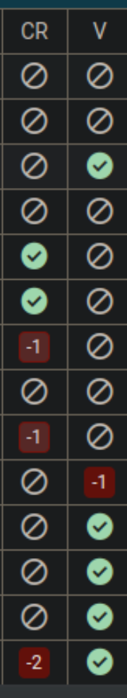

- After running the auto update playbook, Teamcity won't start on its own and displays a message with a option "i am admin or something" if we open this it asks for a Super User token. - Easiest way to find it is to just log into tc.tocco.ch via ssh, then the Token should be displayed at the welcome screen:- This always happens when a schema change occurs on the Teamcity and unfortunately this interrupts the automation process, because in order to start the requested upgrade (and generally to get into the window shown above) a Super User Token must be retrieved from the logs. - We can find this token via :ssh tc.tocco.ch # if not , do the thing from underneath here- Once we entered the token, we see another message where we can start the backup process and the final schema change. After this Teamcity should start on its own again.ssh tc.tocco.ch cd /home/tocco/teamcity/logs vim teamcity-server.log
- After the maintenance Window on Fr, a hook that usually triggers the auto. verification on Teamcity did't work anymore - This was noticed by users, trying to commit stuff on Gerrit. Because there were no more checkmark on (V)
🧠 Breakdown of the Failure
✅ Step 1: APT downloads the
.debfiles
jfrog-artifactory-oss_7.117.5_amd64.deb
and other related packages into /var/cache/apt/archives/.
.deb packages using dpkg.dpkg tries to install ArtifactoryUnpacking jfrog-artifactory-oss (7.117.5) over (7.111.11) ...cannot copy extracted data for './opt/jfrog/artifactory/app/router/bin/jf-router'
to '/opt/jfrog/artifactory/app/router/bin/jf-router.dpkg-new': failed to
write (No space left on device)/ (root filesystem) ran out of space during the unpack phase.dpkg aborts the install of that packagedpkg-deb: error: paste subprocess was killed by signal (Broken pipe)Errors were encountered while processing: jfrog-artifactory-oss_7.117.5_amd64.debdpkg is a low-level package tool — if it fails to unpack, it stops immediately.apt exits with error code 100, which in turn
causes your Ansible playbook to fail with:FAILED! => changed: false msg: '/usr/bin/apt-get dist-upgrade --auto-remove' failed...sudo dpkg --configure -asudo apt-get install -fsudo apt-get dist-upgradeapt-get clean./ using cron, monitoring tools, or Ansible.! Delete the Old file first !
- script name maintenance_ssh_commands.sh - This automates the two tasks verify DB dumps VSHN: and verify Burp archives VSHN: - The Old file in this folder has to me removed first otherwise the script "hänngt irgendwie gegen ende"- And saves the output in a file called DB_dumps_VSHN at the location where the command was executed - The script is located at /home/dave/src/bash_srcipts_loco#!/bin/bash servers_1=( "db6.stage.tocco.cust.vshn.net" "db2.prod.tocco.cust.vshn.net" "db4.tocco.cust.vshn.net" "db8.prod.tocco.cust.vshn.net" "db2.stage.tocco.cust.vshn.net" ) touch DB_dumps_VSHN for i in "${servers_1[@]}" do echo "====================================================================================================" >> DB_dumps_VSHN echo "Server: $i :" >> DB_dumps_VSHN ssh "$i" "ls -lht /var/lib/postgresql-backup/; sudo burp -a list -Q" >> DB_dumps_VSHN echo "====================================================================================================" >> DB_dumps_VSHN echo "" >> DB_dumps_VSHN done
Borg
- Check age and number of files and be sure to verify: Archives with prefix postgres- (database backups).cd ${ANSIBLE_GIT_REPO_ROOT_DIRECTORY}/servers/ ansible-playbook playbooks/backup_check/main.ymlDB dumps VSHN / Burp archives VSHN
- use script from Automation-Scripts aboveOffline backups
- Make sure there is a recent snapshot (from yesterday or today).ssh backup02.tocco.ch 'sudo mount /offline; ls /offline/borg_repos; sudo umount /offline'Check Snapshots
- RSYNC: check uage history at: rsync.netCheck for unused DBs and cleanup if necessary:
tco dbs unused + check the manual Deployment dump folders / delete old dumps.Check error and info logs of autorestore-vm:
ssh autorestore.vm.tocco.ch 'sudo cat /home/autorestore/info.log' ssh autorestore.vm.tocco.ch 'sudo cat /home/autorestore/error.log'
Check Gerrit updates(Wurde 2026 nach Gitlab transferiert)
sha256sum gerrit-{version}.war
ansible-playbook playbooks/install_updates/main.yml -l '!tcagent*.tocco.ch:!artifactory01.tocco.ch' -t all,reboot
sudo apt-mark hold jfrog-artifactory-oss
sudo apt full-upgrade
sudo apt-mark unhold jfrog-artifactory-oss